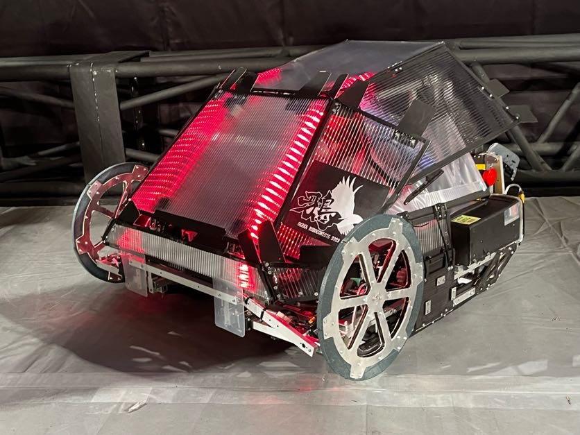

高専ロボコン
高専ロボコンとは、全国の高専学生が、毎年異なる競技課題に対し、アイデアを駆使してロボットを製作し、競技を通じてその成果を競う全国規模の教育イベントです。 高専ロボコン2023の競技テーマは「もぎもぎ！ フルーツＧＯラウンド」で、フルーツを模したボールをロボットで摘み取り、回転するフルーツスポットに投げ入れるというものでした。
競技課題は、2分半の間に角材とロープをくぐり抜ける2カ所の障害物エリアを越えてフルーツに見立てたボールをより多く収穫することを目指します。ロボットの制限高さを越える位置にあるフルーツの収穫や、2周目以降に使うことができるお助けアイテムをいかに活用するか、アイデアの見せどころです。 センターゾーンにあるフルーツの配点が高くなっているため、センターゾーンの戦いが重要となります。
私は大阪公立大学工業高等専門学校のチーム「鴉」のピットメンバーとして、高専ロボコン2023に参加しました。 私がチーム内で果たした役割はマイコンのプログラム担当と無線管理責任者です。
高専ロボコン2023の全国大会は11月26日に両国国技館で開催され、全国の8地区から選ばれた24校が参加しました。 大阪公立大学工業高等専門学校は、決勝戦で熊本八代高等専門学校を破り、初の全国優勝を果たしました。

制作したロボット
「鴉」の特徴は圧倒的スピード, 制御による安定性, そして展開機構です。 「鴉」の足回りは独立ステアリングを使用しており、他高専の追随を許さない圧倒的スピードを誇ります。 他高専が一般的に1分でセンターゾーンに侵入する中、私たちの制作したロボットは32秒でセンターゾーンに進入することができます。 また高性能な光学センサ(LiDAR)を使用した自動ロープ補正機能により、最高スピードを維持したままロープに引っかかることなく、くぐり抜けることができます。 最速でセンターゾーンに進入した後は11段ロジャーにより3mの高さまで展開して、高所に設置されたフルーツを回収します。

地区大会
高専ロボコン2023の地区大会は10月8日に神戸市立中央体育館で開催され、2府4県から7校14チームが参加しました。
全国大会
高専ロボコン2023の全国大会は11月26日に両国国技館で開催され、全国の8地区から選ばれた24校が参加しました。